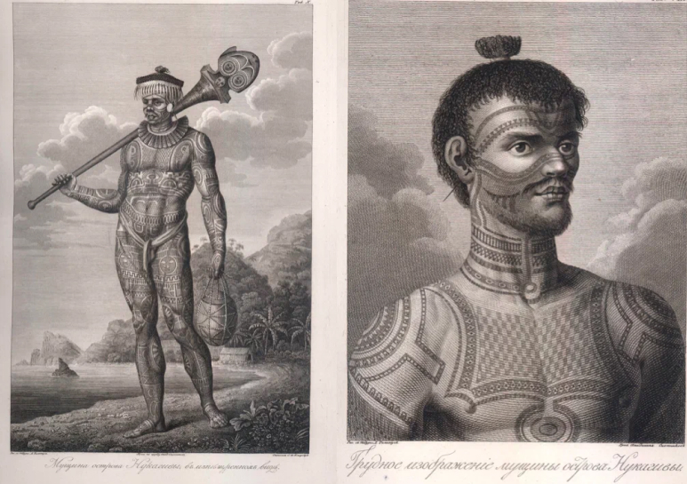
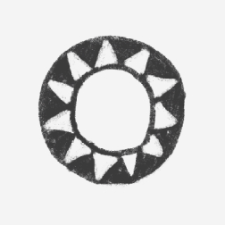
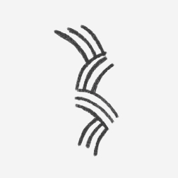
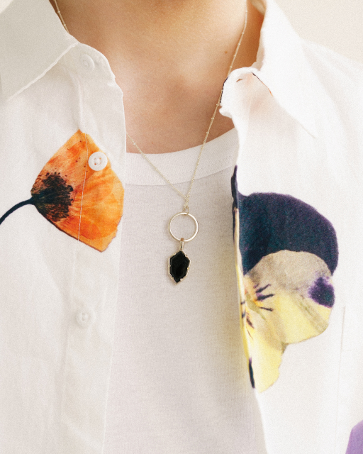

все коллекции
TATAU
Коллекция TATAU родилась из легенд полинезийского народа маори и была вдохновлена узорами новозеландской татуировки та-моко.



украшения-татуировки, соединяющие человека со стихией
Основным мотивом народного искусства Полинезии является нерушимый союз человека и природы: та гармония, в которой они существуют друг с другом.
Татуировки полинезийцев тесно связаны с богами, духами и стихиями, которыми они управляют — орнаменты на тату не просто носят характер оберега, но и служат
способом коммуникации и выражения благодарности богам.
Создавая коллекцию TATAU, мы использовали чернение на серебре как краску для тату. Так получились украшения-обереги, где каждый орнамент рассказывает свою
особенную историю.

Например, серия HONU вдохновлена формой панциря черепахи — это символ семьи и мудрости у полинезийцев.
А украшения AHO символизируют рыболовную леску, которую маори считают проводником между человеком и океаном.
Смотреть все изделия
другие коллекции

Нашаистория началась с большой любви к натуральным камням, а украшения с ними всегда были неотъемлемой частью бренда.

Наша новая коллекция, посвященная культовому музыкальному фестивалю «Вудсток» 1969 года.